Tale of Plum
Scroll
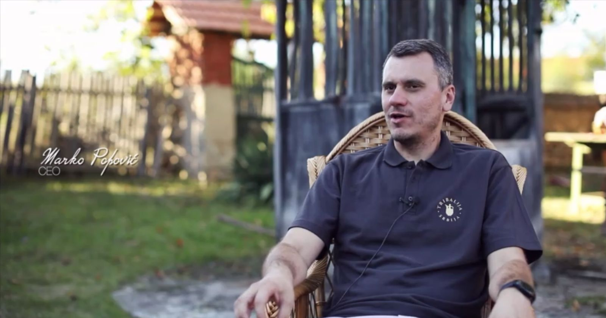
Vision
Founder and driving force behind the brand, Marko Popović defined Skaska’s direction from the start — uncompromising quality. His vision brings together family heritage, modern standards, and a strong brand identity.
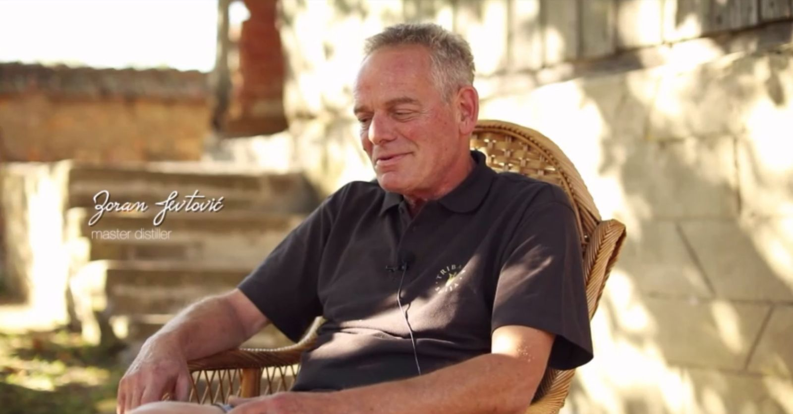
Craftsmanship
Co-founder and 4th generation master distiller, Zoran Jevtović is responsible for Skaska’s character. His experience and refined sensory approach guide the carefully controlled double distillation, shaping the spirit’s elegant and balanced profile.

Heritage
Heritage - Co-founder Andreja Bošković brings a deep connection to the land and the belief that exceptional brandy begins with exceptional fruit. His philosophy is rooted in respect for nature and the patience that artisanal plum brandy demands.
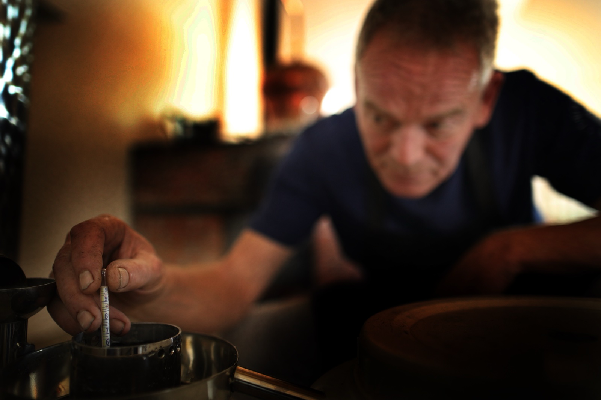
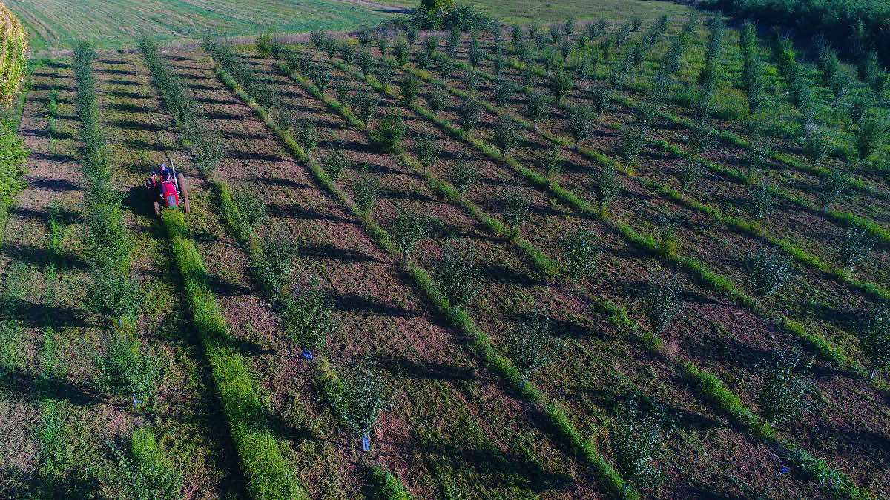
 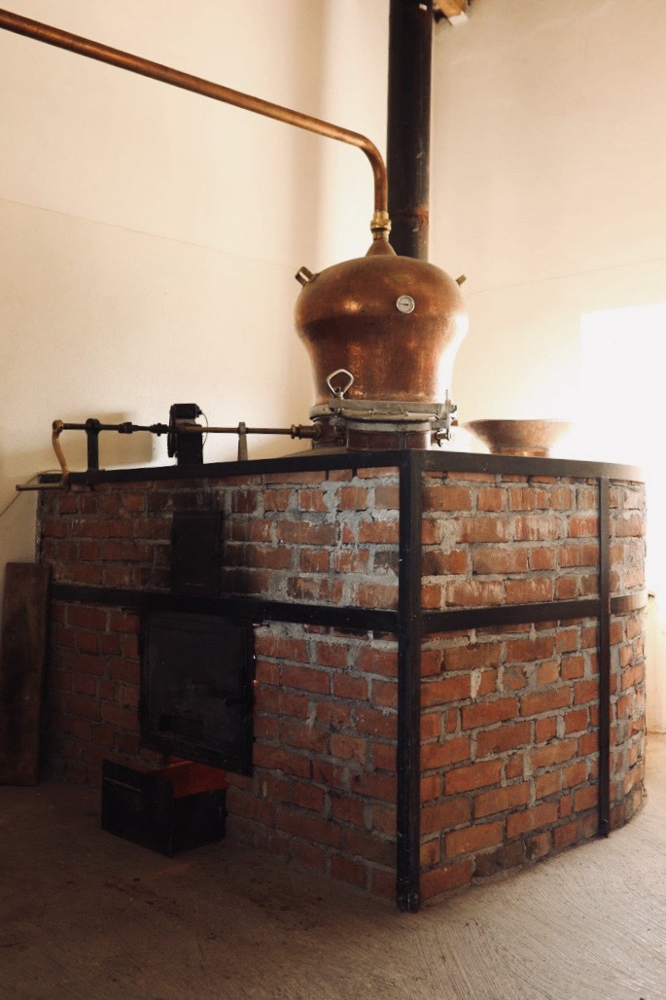
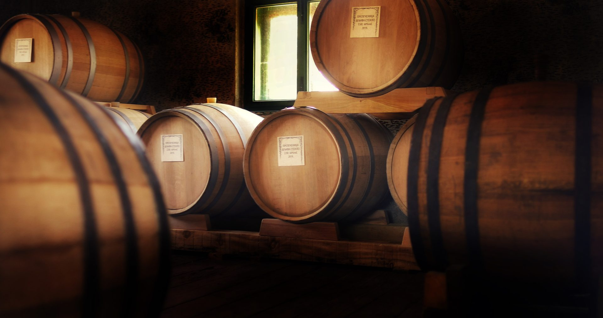
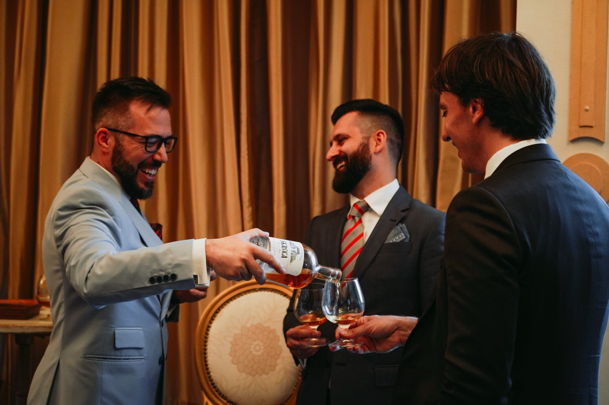
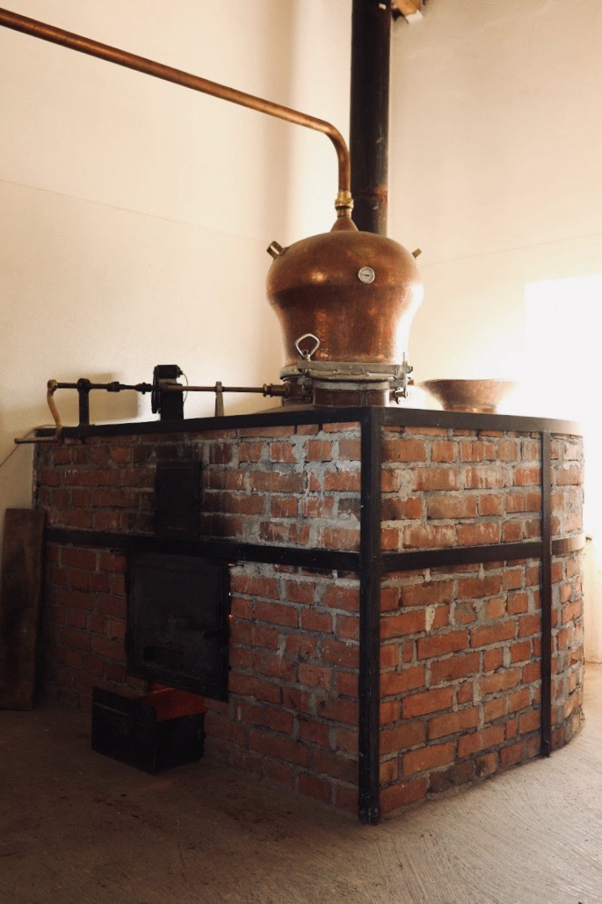
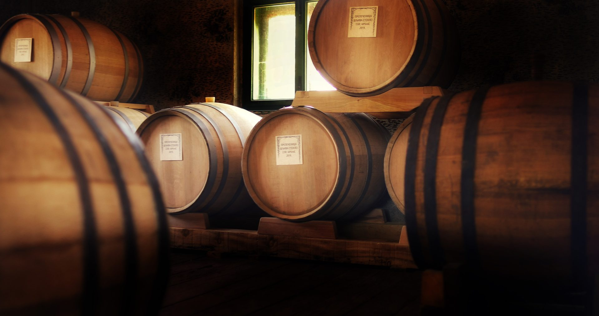
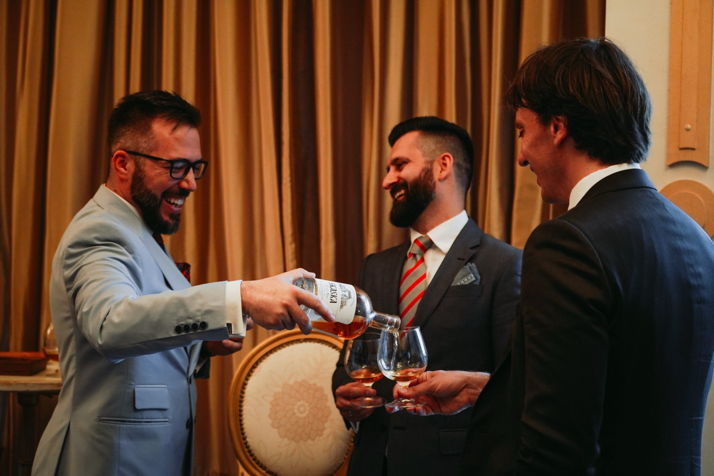
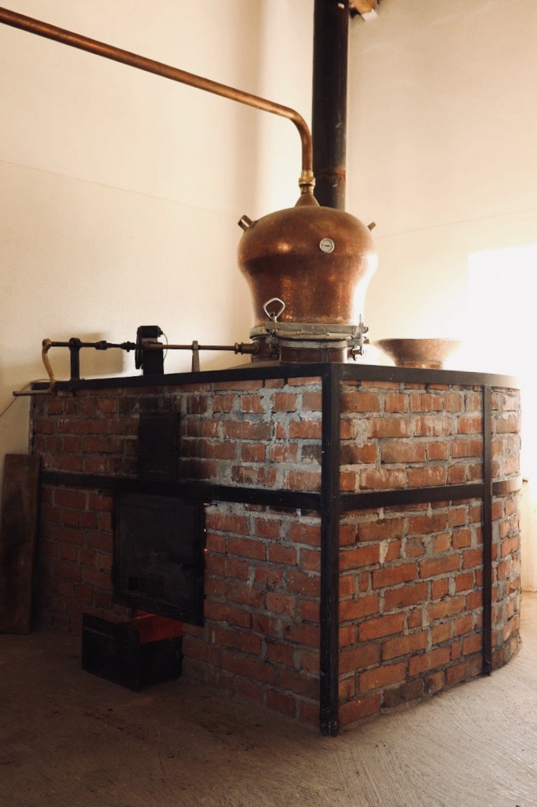
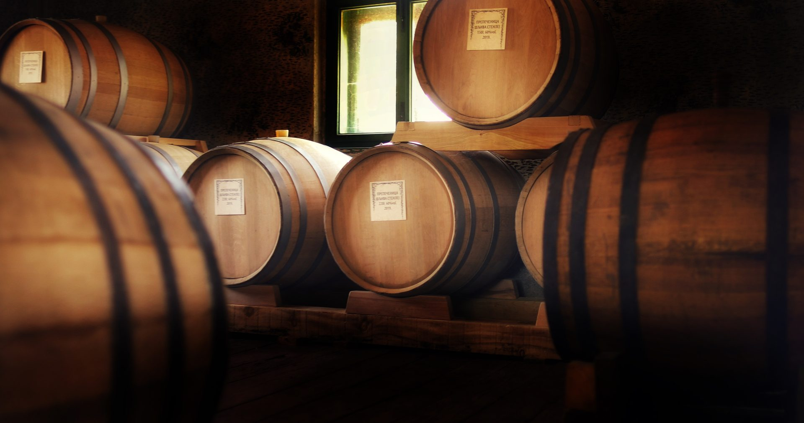
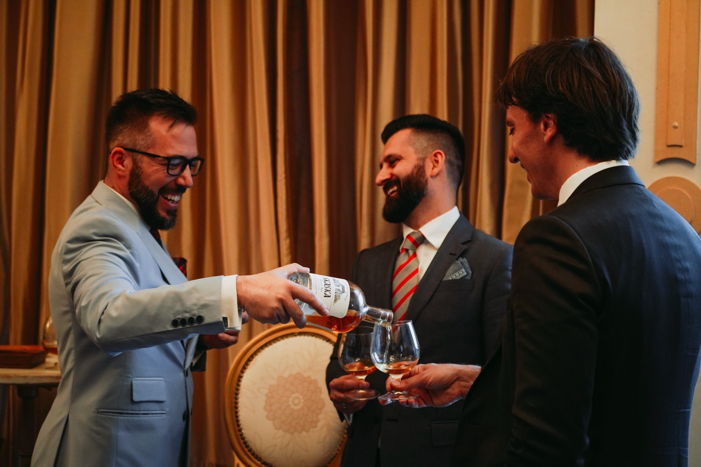
Process
Skaska is crafted in Bare in Shumadia, from carefully grown Stanley plums cultivated in our orchards across three distinct locations: Brdo, Aleksića and Kovionica, under the expert supervision of agricultural engineer Aleksandar Urošević. Following the late September harvest, the fruit is gently crushed and left to its own spontaneous fermentation in stainless steel tanks, with nothing added and nothing taken away. When the process naturally comes to an end, the plum puree makes its way to double distillation in artisanal copper pot stills. The spirit then matures for a minimum of five years in French oak barrique barrels, where it develops depth, smoothness, and aromatic complexity. The union of nature, knowledge and time gives Skaska its distinctive character.
2017.
Founded
5+
Years matured
1.100
Plum Trees
10K
Bottles annually